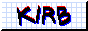
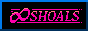

Links
You find a table with a giant map laid on it and various locations marked out with pins.
Here's where I store links to interesting places on the web! A mix of links I want to remember and sites I think will be useful to other people. These entries are in no particular order

Fun & Interesting
| Link | Notes |
|---|---|
| Cloudhiker | Find random interesting websites-A lot of the sites in this category are from Cloudhiker sessions |
| The Cave of Dragonflies | Fav site since I was literally a child and still check in on. Pokemon news, info, activities, fic, etc. |
| Larsdatter | Links to images, descriptions, and museum artifacts relating to medieval and renaissance material culture. Extremely useful for visual research for comics, character design, etc. Super well organized. |
| DWuser: Lightbox Effect | Code I used to add a lightbox effect to some parts of this site |
| ImageMapper | Tool to make responsive image maps (used on homepage of this site) |
| r/MoneyDiariesACTIVE | yes I know this is a link to reddit, but this is one of the subs I check daily and has been a great resource for learning about personal finance |
| Ship of Theseus | neat robot dressup game, nudity |
| Miniature Calendar | Really cool art project, a new miniature diorama every day |
| garden.surf | cool art project |
| neal.fun: The Deep Sea | Great storytelling through interactivity |
| IDEA | neat visualizations |
| The First Four Years of Glitch | Interesting article about a tool I use a lot to make games |
| Rite House | Art project about daily rituals |
| When you browse Instagram and find former Australian Prime Minister Tony Abbott's passport number | Super fun read |
| Nested | One of my fav games |
| R74n | A variety of games and projects |
| Gossip's Web | Link directory |
| Hundred Rabbits | Site about living off the grid on a boat- contains info about the webmasters' life at sea, logistics, art, etc |
| Slaying the Chinese Jabberwock | Interesting article about translating Alice's Adventures in Wonderland to Mandarin |
| The Solar Website | Article about optimizing your site to consume less power and powering a site on solar. Site is sometimes offline because of this (lol). IDK if I could ever do that for this site and still maintain the aesthetics I want, but maybe a cool idea for a future project? |
Shopping
| Link | Notes |
|---|---|
| 42Lolita | Taobao shopping service for lolita that I've had good experience with |
| Lacemarket | Secondhand lolita shopping |
| Warungbeads | Jewelry supply store |
| Manto Fev | Craft supply store with quirky items, has vintage and flea market sections |
| Pittsburgh Creative Reuse | Secondhand craft store |
| Make and Mend | More secondhand craft supplies |
Personal Sites
| Link | Notes |
|---|---|
|  | Cool art and COOL PERSON!!! Yuri comrade in arms |
| Personal site of a gay couple that includes their writing, relationship history, and the best archive of the comics of Gerard P. Donelan I've found. Their visualization of their site as a house was a big inspiration for this site. | |
| Crimson Reflections | Blog about lolita culture, news and history |
| Stephano (Buttcape) | Lolita blog |
| Interesting writing I want to follow | |
| The Satyrs' Forest | A lot of interesting content: writing, art, cool links |
 |
A super fun site to explore (I really like the petsite and real life pet pages!) |
| Interesting writing on a lot of different topics | |
 |
Super cute pixelart |
 |
Really cool site layout, games, fun to explore! |
 |
Cool info about web communities and pixel art content |
| Their comic (online afterlife) is REALLY good. Also has blog posts about art that really resonate with me. | |
 |
I've been following Bechno Kid's Pokemon art for a long time (since...HS...) and I'm so glad to have found them again! |
 |
Really stunning pixelart and site! It feels like a lot of love and effort was put into pixelling as much as possible for the site, which I admire and aspire towards |
 |
I love a website that embraces skeuomorphism especially in the form of a house (obviously). I love the dolls and the labyrinth game! |
 |
A website full of fun pages of things the webmaster loves |
|  | It is SO cool this site is flavored like you are walking through a town and the art slaps |
 |
Elegant and insp layout, good art, interesting writing |
| Cool art and a fun to explore site! | |
 |
Charming pixelart + thoughtful writing on life, the web, accessibility, and video games |
 |
Useful and thought-provoking writing on web dev and accessibility, site tools, and good art! |
 |
Website themed like a location with a medieval aesthetic??? yessss. This site was SO fun to explore and get lost in! Full of cool projects, art, fashion, recipes, etc |
| A lovely and dreamy castle to explore | |
| I love looking through sites packed with joy and enthusiasm! Also the sculpture page is very cool | |
 |
Good art, and useful links to art resources and insps |
| STRML | Neat homepage and cool way to use the web as a medium for art |
| Cool comics, language projects, and articles about art and linguistics | |
| Unlucky Clover | Great art and lolita wardrobe! |